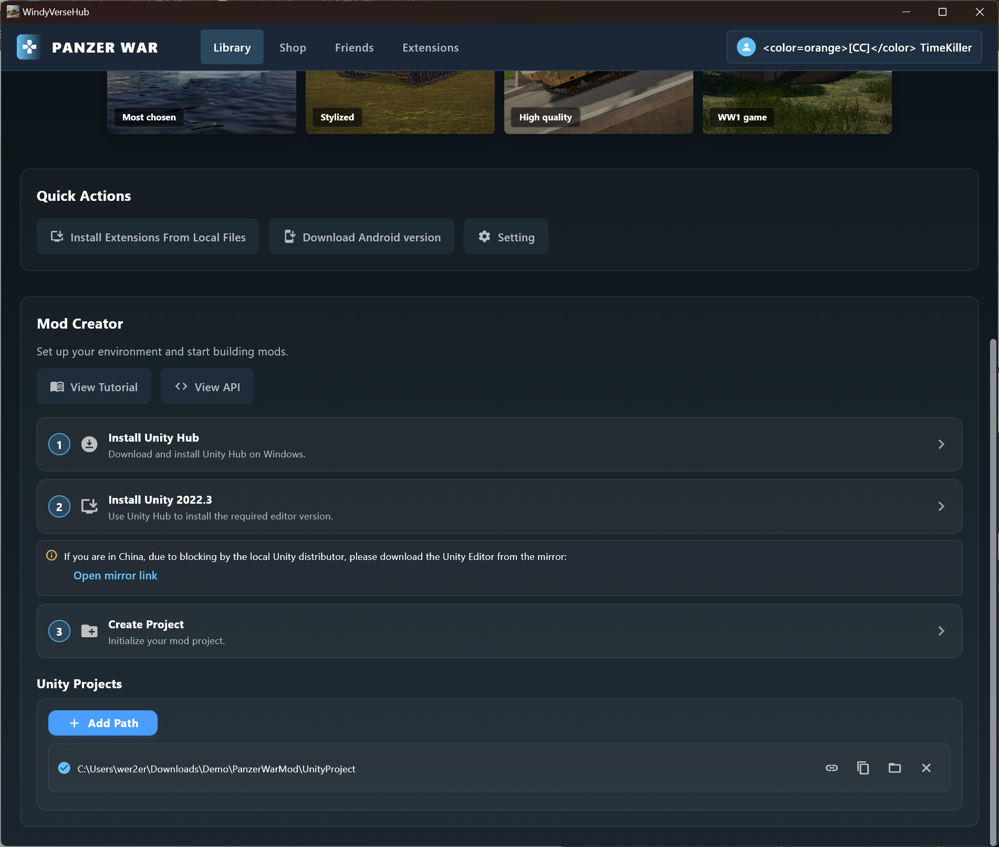
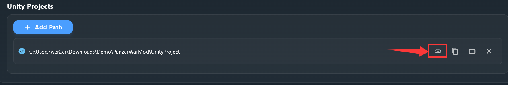
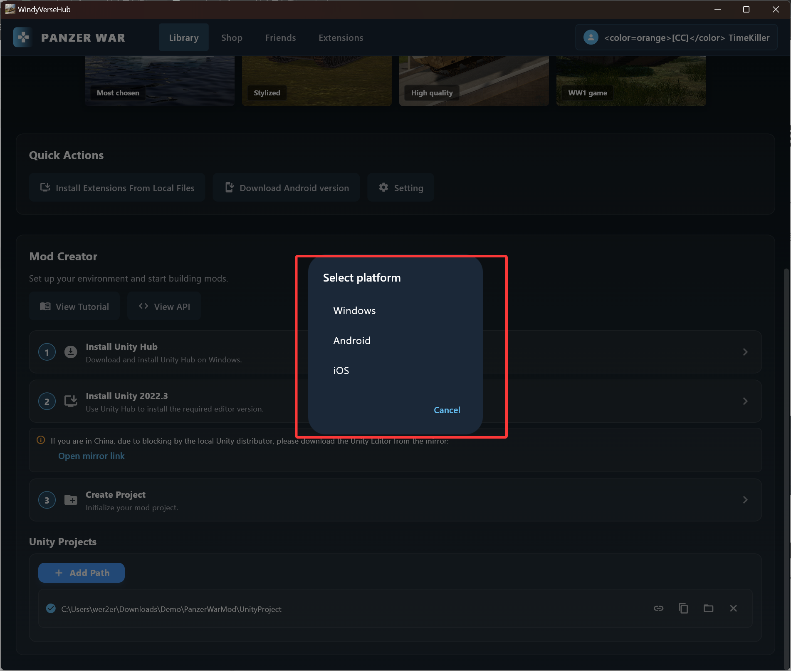
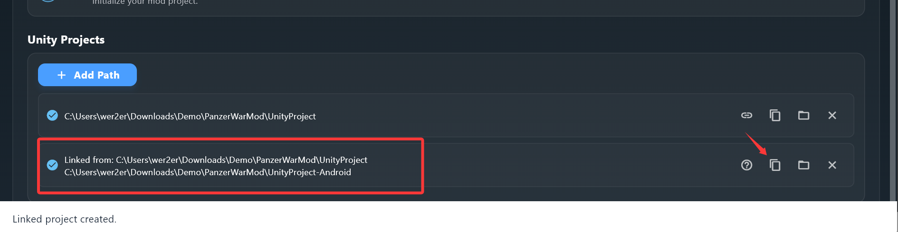
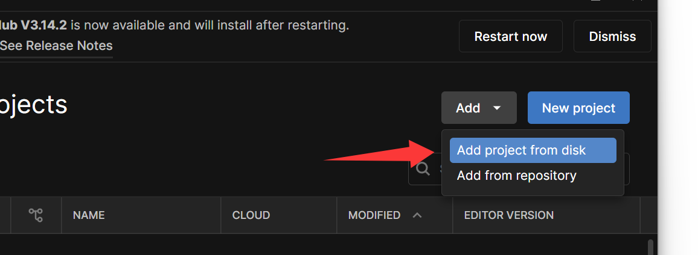
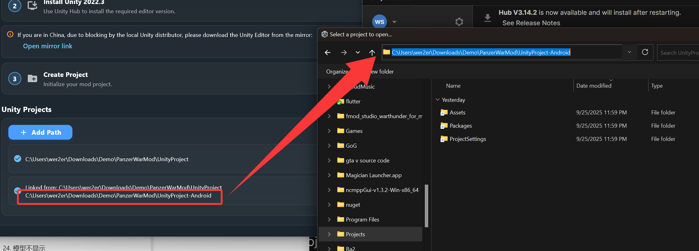
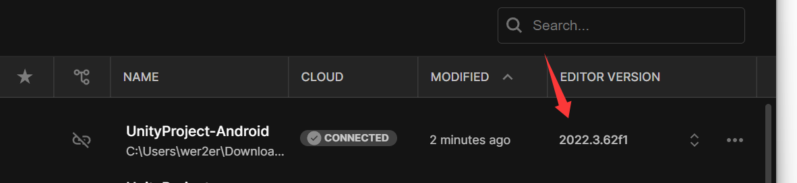
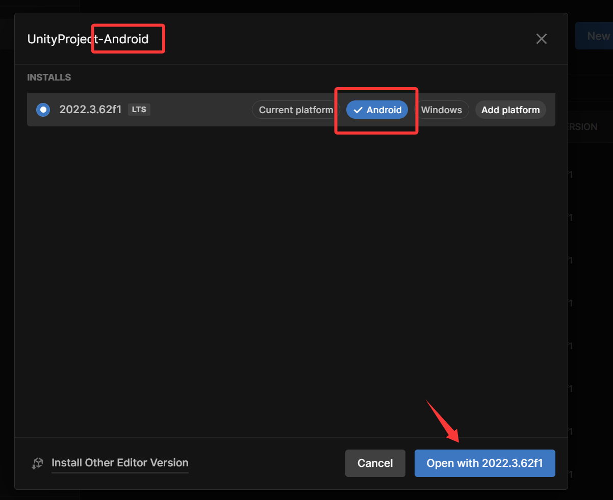

04. Multi-Platform Build 多平台打包 （Hub）
Description 介绍
For sharing mods with the community, supporting both Windows and Android mod files is essential. To avoid switching back and forth between platforms, we need to create a soft link and set up a synchronized build environment for Windows and Android resources.
对于向社区分享模组来说，同时支持 Windows 和 Android 的模组文件是必不可少的。为了避免频繁切换平台，我们需要对项目进行软连接，建立一个 Windows 与 Android 资源同步的打包环境。
We will need to use our GameHub to create soft-link for projects.
我们需要用到启动器，来创建项目的软连接！

GameHub 启动器
Make sure your project has been added to the GameHub. If it hasn’t been added yet, click Add Path to include your Unity project in the GameHub.
请确保您的项目已添加到 GameHub。如果尚未添加，请点击 Add Path 将您的 Unity 项目加入到 GameHub 中。

Select the target platform you want to build for
选择你要打包的目标平台

A new project has been soft-linked. Click the Copy button to copy the path.
新的项目已创建软链接。点击 复制 按钮即可复制路径。

Add in UnityHub 在 Unity Hub 添加项目
Open the UnityHub and click Add project from disk
打开 UnityHub，并点击 Add project from disk

Enter the path of the project that was just soft-linked.
填入刚刚创建的软连接的工程的路径

Click the version
点击 版本号

Change the Current Platform to the platform of the project you created, make sure the name matches the platform, and then click Open.
将 Current Platform 修改为你创建的工程的平台，确保名称与平台一致，然后点击 打开。
